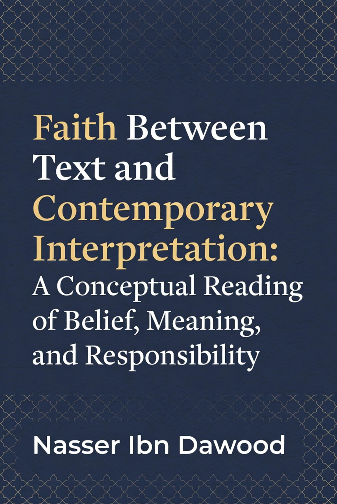

By Nasser Ibn Dawood
For readers interested in exploring
the full depth and nuances of the original Arabic edition, which provides
expanded discussions and references, the complete book is freely available in
my digital library at https://nasserhabitat.github.io/nasser-books/. You may
download the Arabic version and utilize Google Translate for a quick, real-time
translation to English or any preferred language. This English edition is a
condensed conceptual adaptation, designed for accessibility and intellectual
engagement, but the source material offers additional layers for those wishing
to delve deeper.
In an era where
"faith" is often invoked as a shield for identity, a justification
for conflict, or a vague spiritual comfort, it becomes essential to pause and
ask: What does faith truly entail? This book is not a defense of dogma, nor an
attempt to convert or confront. Rather, it is an intellectual exploration of
the concept of faith (īmān) as presented in the
Qur'anic text—a linguistic and conceptual system that demands precision rather
than assumption.
For the Western
reader, accustomed to discussions of faith through lenses like Kierkegaard's
"leap" or Nietzsche's critique of religion, this reading offers a
fresh perspective. Here, faith is approached not as an emotional or existential
state, but as a structured concept rooted in language, responsibility, and
action. The Qur'an is treated as a self-contained textual framework, where
words are chosen with intentionality, distinguishing between belief, trust,
security, and ethical commitment.
This condensed edition
distills the original Arabic work into a conceptual essay, avoiding polemics
and focusing on clarity. It invites you to engage with faith as a problem of
meaning—one that transcends cultural boundaries and challenges us to rethink how
belief shapes human responsibility. Whether you agree or differ, the goal is
deeper awareness, not adherence.
Nasser Ibn Dawood
January 30, 2026
Faith is one of those
terms that seems self-evident until scrutinized. In common parlance, it might
mean unquestioning belief, emotional certainty, or affiliation with a group.
But what if faith is none of these—or rather, more than these? In this reading,
faith emerges as a conscious commitment, a stance toward the unseen that
integrates intellect, choice, and accountability.
Consider faith not as
passive acceptance but as an active orientation. It is not merely believing in
something despite evidence (or lack thereof); it is a reasoned
conviction about realities beyond sensory perception. This conviction demands
verification through logic and observation, leading to a certainty that
motivates ethical living. Faith, in this sense, is not blind; it is the product
of deliberate reasoning.
Yet, faith is often conflated with identity. In
contemporary discourse, it becomes a marker of "us versus them,"
justifying exclusion or violence. This misstep arises from ignoring the term's
conceptual depth. Faith is personal yet communal, internal yet manifest— a bridge between the heart's conviction and the
world's demands.
At its core, faith is
responsibility. It is not an escape from doubt but an embrace of it, resolved
through inquiry. Without this, faith risks becoming superstition or ideology,
detached from meaning.
Language is not
neutral; it shapes thought. In the Qur'anic framework, terms are precise, with
roots and derivations carrying distinct meanings. Misreading them leads to
distorted interpretations. Take "īmān"
(faith), derived from the root "a-m-n," which also yields "amn" (security) and "amīn"
(trustworthy). These are related but not identical.
"Īmān" refers to a conviction in the unseen—God,
angels, scriptures, prophets, the afterlife, and divine decree—achieved through
rational deduction. It is transitive with prepositions like "bi-"
(in/by), as in "āmena bi-llāh"
(believed in God), emphasizing intellectual assent.
Contrast this with
"amn," which denotes safety or peace from
fear. For instance, providing security to others is "amn,"
not "īmān." Confusing the two reduces faith
to mere behavior, ignoring its cognitive foundation. The Qur'an pairs opposites
carefully: the antithesis of faith is disbelief (kufr), hypocrisy (nifāq), or association (shirk)—all intellectual or
attitudinal states—not fear or insecurity.
Why does this matter?
Contemporary interpretations often blend these, turning faith into social
ethics alone. But the text insists on distinction: faith is the root, ethics
the fruit. Mistranslations erode this, leading to faith as
"submission" without inquiry, or as "peace" without
conviction.
In a Western context,
this echoes philosophical debates on semantics—think Wittgenstein's language
games—where words define reality. Here, the Qur'anic language is a system:
self-referential, where one verse illuminates another, demanding linguistic
rigor for conceptual accuracy.
Faith without action
is hollow, but action without faith is mechanical. The key is separation
without disconnection: faith as the inner conviction, action as its necessary
expression.
In this view, faith is
not measured by deeds but validated by them. Good actions—justice, compassion,
integrity—emerge from true faith, like fruit from a healthy tree. Yet, deeds alone do not constitute faith; a hypocrite may
act ethically while lacking conviction.
This avoids two
extremes: reducing faith to ritual (legalism) or to emotion (mysticism).
Instead, faith heightens responsibility: the believer is accountable not just
for actions but for intentions rooted in conviction.
Drawing a conceptual
parallel (without direct comparison), this resonates with Kantian ethics, where
duty stems from rational will, not mere habit. Faith amplifies this: it is a
commitment to ethical laws derived from reasoned belief in a transcendent order.
In practice, this
means faith inspires social harmony—providing "amn"
(security) to others—but does not equate to it. A believer in peril may still
hold faith, as conviction transcends circumstance. Action disconnects from
faith only when it contradicts conviction, leading to hypocrisy.
Ultimately, faith and
action are intertwined: the former ignites the latter, creating a responsible
life.
Modern interpretations
of faith often stray from textual precision, influenced by cultural, political,
or philosophical pressures. Three common pitfalls emerge.
First, faith reduced
to morality: Here, belief becomes synonymous with ethical behavior, like
"granting security" to society. While appealing in a secular age,
this empties faith of its cognitive dimension, turning
it into humanism without transcendence. The text counters this: faith is belief
in the unseen, from which ethics flow.
Second, faith
weaponized politically: In some discourses, faith justifies division or
coercion, conflating conviction with group loyalty. This ignores the Qur'anic
emphasis on personal responsibility and rational inquiry, where faith unites
through shared humanity, not divides.
Third, faith diluted
into spirituality: Vague notions of "inner peace" or "universal
energy" strip faith of structure, making it subjective and unverifiable.
The original concept demands intellectual engagement, not emotional vagueness.
These confusions arise
from overlooking linguistic distinctions and imposing external agendas. In a
global context, they mirror Western debates—faith as social control (Marx) or
personal therapy (New Age)—but the Qur'anic reading offers balance: faith as
meaningful commitment, resistant to reduction.
Faith does not grant
immunity from error or accountability; it heightens them. A believer is not
superior by default but responsible for aligning conviction with action.
This challenges
notions of faith as a "get-out-of-jail-free" card. Wrongdoing
nullifies actions' merit if rooted in disbelief or arrogance, but true faith
demands self-correction. The believer must confront doubts, refine
understanding, and embody ethics.
In this framework,
faith increases vulnerability: it exposes one to divine scrutiny, where
intentions matter as much as outcomes. No one is "saved" by
affiliation alone; responsibility is universal.
For Western readers,
this echoes existentialism—Sartre's "bad faith" as self-deception—
but with a transcendent anchor. Faith is authentic living, where belief imposes
ethical demands, fostering growth rather than complacency.
Interpretation has
limits: the text sets boundaries, but human understanding evolves. Faith
accommodates pluralism—different paths to truth—without relativism. It invites
dialogue, not imposition.
Open questions
include: How does faith adapt to AI and modern ethics? Can it transcend
identity politics? These remain fertile for exploration.
**Final Reflection:
Belief Without Awareness Is Not Faith**
Faith thrives on
awareness. Without questioning and refining, it stagnates. This reading invites
you to engage: not as doctrine, but as a call to
meaningful existence.
What does faith really
mean? Is it inner certainty, ethical action, or something deeper? This
conceptual essay explores faith through the Qur'anic lens, distinguishing
belief from security and conviction from identity. A thoughtful guide for
seekers of meaning.
Nasser Ibn Dawood is
an engineer and independent researcher in Qur'anic linguistics, blending
analytical rigor with conceptual inquiry. His works focus on liberating sacred
texts from institutional constraints, promoting open, reasoned engagement.